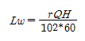
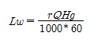
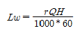
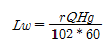
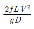
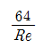
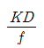
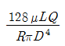

소방설비기사(기계분야) (2006-03-05 기출문제)
1과목: 소방원론
1. 자연발화성 물질이라고 볼 수 없는 것은?
- 니트로 셀룰로우즈
- 질산에틸
- 트리에틸 알루미늄
- 벤젠
(정답률: 63%)

2. 다음 중 분진 폭발의 위험성이 없는 것은?
- 소석회
- 어분
- 석탄분말
- 밀가루
(정답률: 70%)
3. 다음의 파라핀계 탄화수소 중 발열량이 가장 큰 것은?
- 메탄
- 프로판
- 헵탄
- 테칸
(정답률: 53%)
4. 다음 화학물질 중 금수성이 가장 큰 물질은?
- 철분
- 구리분
- 황린
- 나트륨
(정답률: 53%)
5. 인화성 액체의 연소점, 인화점, 발화점의 온도 순서로 옳은 것은?
- 연소점 > 인화점 > 발화점
- 인화점 > 발화점 > 연소점
- 인화점 > 연소점 > 발화점
- 발화점 > 연소점 > 인화점
(정답률: 53%)
6. 제3류 위험물 중 자연발화성만 있고 금수성이 없기 때문에 물속에 보관하는 물질은?
- 알킬리튬
- 황린
- 칼륨
- 알루미늄 탄화
(정답률: 73%)
7. 연소의 3요소 중 점화원(발화원)의 분류로서 기계적 점화원으로만 되어 있는 것은?
- 충격, 마찰, 기화열
- 고온표면, 열방사선
- 단열압축, 충격, 마찰
- 나화, 자연발열, 단열압축
(정답률: 72%)
8. 다음 물질 중 분자 내부에 산소를 함유하고 있지 않는 액체 탄화수소 중에 보관해야 하는 것은?
- 황화린
- 황린
- 적린
- 나트륨
(정답률: 41%)
9. 소화분말의 주성분이 제1인산암모늄인 분말소화약제는?
- 1종 분말소화약제
- 2종 분말소화약제
- 3종 분말소화약제
- 4종 분말소화약제
(정답률: 83%)
10. 후래쉬 오버(flash over)에 대한 설명으로 가장 타당한 것은?
- 에너지가 느리게 집적되는 현상
- 가연성 가스가 방출되는 현상
- 다. 가연성 가스가 분해되는 현상
- 라. 급격히 화염이 확대되는 현상
(정답률: 74%)
11. 위험물질의 위험성을 나타내는 성질에 대한 설명으로 옳지 않은 것은?
- 알킬알루미늄, 수소화나트룸 및 탄화칼숨은 금수성 물질이다
- 유황은 가연성 고체인 제2류 위험물이다
- 알코올류라 함은 탄소수가 1개에서 3개까지인 포화1가 알코올류 의미한다.
- 황인은 가연성 고체로서 제2류위험물에 속한다
(정답률: 63%)
12. 다음은 연료의 발열량에 대한 설명이다. 잘못된 것은?
- 연소시 생성되는 수증기 증발잠열의 포함여부에 따라 고발열량과 저발열량으로 나눈다.
- 일반적으로 표시하는 단위는 KJ/Kg, Kcal/kg, kcal/mol등이다.
- 기체의 발열량은 단위체적을 일정하게 하기 위하여 일반적으로 25℃ 1atm의 부피를 기준으로 한다.
- 수증기의 중발잠열을 포함하지 않는 저발열량은 진발열량이라고도 한다.
(정답률: 65%)
13. 에스테르와 알칼리의 작용으로 가수분해되어 알코올과 산의 알칼리염이 되는 반응은?
- 수소화 분해반응
- 탄화반응
- 비누화 반응
- 할로겐화 반응
(정답률: 72%)
14. 화재의 원인이 되는 정전기 예방대책 중 잘못된 것은?
- 접지시설을 한다.
- 비전도체물질을 사용한다
- 공기중의 상대습도를 높인다
- 공기를 이온화한다
(정답률: 59%)
15. 실의 상부에 설치된 창 또는 전용 제연구로부터 연기를 옥외로 배출하는 방식으로 전원이나 복잡한 장치가 필요하지 않으며, 평상시 환기 겸용으로 방재설비의 유휴화 방지에 이점이 있는 것은?
- 밀폐 제연방식
- 스모그 타워 제연방식
- 자연 제연방식
- 기계 제연방식
(정답률: 63%)
16. 물의 냉각 특성으로 옳지 않은 것은?
- 물은 온도가 낮을소록 냉각 효과가 크다
- 건조한 상테에서 증발이 용이하다
- 분무 상태일 때에는 냉각효과가 적다
- 물방울 크기가 작은 분무 상태일 때 냉각 효과가 크다
(정답률: 52%)
17. 다음의 할로겐 화합물 중 오존 파괴지수가 가장 큰 것은?
- Halon 104
- Halon 1211
- Halon 2402
- Halon 1301
(정답률: 61%)
18. 화재시의 연소현상에 관한 설명으로 적당하지 못한 것은?
- 화재는 가연물의 원료로부터 시작하여 그 연소로 종료된다. 이와 같은 과정을 연소 현상이라 한다.
- 공기는 지상에 널리 존재하고 있으며 공기 중에서 가연물질이 가열되면 연소를 시작한다.
- 가열되어 발생한 화재는 기상이나 가연물의 상태와는 관계없이 이동하지도 않고, 성장하지도 아니한다.
- 연소의 요인으로는 접염, 대류, 복사, 비화 등이 있다.
(정답률: 59%)
19. 건물 신축시 방재기능의 요인으로 고려하여야 할 동선 계획과 관계가 먼 것은?
- 명쾌한 피난통로의 확보
- 각 기능 단위의 유기적 연결
- 두 방향 피난통로의 확보
- 이해하기 쉬운 평면계획
(정답률: 60%)
20. 연소시의 생성물로 인체에 유해한 영향을 미치는 것에 대한 설명이 옳게 된 것은? (문제 오류로 실제 시험에서는 모두 정답처리 되었습니다. 여기서는 가번을 누르면 정답 처리 됩니다.)
- 암모니아는 냉매로 사용되고 있으므로, 누출시 동해(凍害)의 위험은 있으나 자극성은 없다.
- 황화수소가스는 무자극성이나, 조금만 호흡해 도 감지 능력을 상실케 한다.
- 일산화탄소는 산소와의 결합력이 극히 강하여 질식작용에 의한 독성을 나타낸다.
- 아크로레인은 독성은 약하나 화학제품의 연소시 다량 발생하므로 쉽게 치사농도에 이르게 한다.
(정답률: 65%)
2과목: 소방유체역학
21. Carnot 사이클이 1000 K의 고온 열원과 400K의 저온 열원사이에서 작동할 때 사이클의 열효율은 얼마인가?
- 20 %
- 40 %
- 60 %
- 80 %
(정답률: 57%)
22. 펌프에 의하여 유체에 실제로 주어지는 동력은? [단, Lw : 동력 (KW) r : 물의 비중량(N/m3) Q : 토출량 (m3/min) H : 전양정 (m) g : 중력가속도(m/s2) ]




(정답률: 31%)
23. 온도 15℃, 압력 180Kpa에서 수소가 질량유량 0.02 Kg/s, 속도 60 m/s로 움직이려면 관로의 안지름은 몇 mm로 하여야 하는가? (단, 수수의 가체상수는 4157 N·m/kg·K 이다. )
- 53.1
- 55.1
- 57.1
- 59.2
(정답률: 20%)
24. 진공압력이 40mmHg일 경우 절대압력은 몇 kPa 인가? (단, 대기압은 101.3 kPa 이다.)
- 5.33
- 101.3
- 96
- 196
(정답률: 53%)
25. 다음 중 수평원관 속의 층류유동에서 마찰 손실 수두를 나타내는 식은? (단, f:관마찰계수, L: 관길이, V:유속, D:관지름, Re:레이놀즈수, K:손실계수, Q:유량, μ:점성계수, r:비중량 )




(정답률: 38%)
26. 지름 150mm인 원관에 비중이 0.85, 동점성계수가 1.33 * 10^-4 m2/s인 기름이 0.01 m3/s의 유량으로 흐르고 있다. 이때 관마찰계수는 약 얼마인가?
- 0.1
- 0.12
- 0.14
- 0.16
(정답률: 27%)
27. 두께 4mm의 강 평판에서 고온측 면의 온도가 100℃이고 저온측 면의 온도가 80℃이며 단위 면적(1m2)에 대해 매분 30000 kJ의 전열을 한다고 하면 이 강판의 열전도율은 몇 W/m·℃인가?
- 100
- 1⑤
- 110
- 115
(정답률: 45%)
28. 분말 소화약제의 취급시 주의사항으로 옳지 않은 것은?
- 습도가 높은 공기중에 노출되면 고화되므로 항상 주의를 기울인다.
- 충진시 다른 소화약제와 혼합을 피하기 위하여 종별로 각각 다른 색으로 착색되어 있다.
- 실내에서 다량 방사하는 경우 분말을 흡입하지 않도록 한다.
- 분말소화약제와 수성막포를 함께 사용할 경우 포의 소포 현상을 발생시키므로 병용해서는 안된다.
(정답률: 63%)
29. 용량 1000 L의 탱크차가 만수 상태로 화재현장에 출동하여 노즐압력 294.5 kPa, 노즐 구경 21 mm를 사용하여 방수한다면 탱크차 내의 물을 전부 방수하는데 몇 분이나 소요되겠는가? (단, 모든 손실은 무시한다.)
- 1.7분
- 2분
- 2.3분
- 2.7분
(정답률: 31%)
30. 물이 파이프 속을 꽈 차서 흐를 때, 정전 등의 원인으로 유속이 급격히 변하면서 물에 심한 압력 변화가 생기고 큰 소음이 발생하는 현상을 무엇이라 하는가?
- 수격 작용
- 서어징
- 캐비테이션
- 실속
(정답률: 48%)
31. 할로겐 화합물 소화약제의 특성으로 옳지 않은 것은?
- 비점이 낮다.
- 할로겐 원소의 무촉매 효과는 염소가 제일 크다
- 기화되기 쉽다.
- 공기보다 무겁고 불연성이다.
(정답률: 40%)
32. 체적 2000 L의 용기내에서 압력 0.4Mpa, 온도 55℃의 혼합기체의 체적비가 각각 메탄(CH4) : 35%, 수소(H2) : 40%, 질소(N2): 25% 이다. 이 혼합 기체의 질량은 몇 kg인가?
- 3.65
- 3.73
- 3.83
- 3.94
(정답률: 24%)
33. 다음 설명 중 바른 것은?
- 계기압력은 절대압력에서 대기압을 뺀 값과 같다.
- 계기압력은 절대압력과 대기압을 합한 값과 같다.
- 정지한 유체에서는 수평 방향으로의 압력이 가장 크게 나타난다.
- 물속에 잠긴 물체의 부력에서 수중에서의 물체의 무게를 빼면 물체의 공기 중에서의 무게를 예측할 수 있다.
(정답률: 55%)
34. 다음 중 기체 유동의 국소 속도를 측정하는 것은?
- 위어
- 오리피스
- 연선 유속계
- 로터미터
(정답률: 39%)
35. 평균속도 4 m/s로 지름 75 mm인 관로속을 물이 흐르고 있을 때 중량 유량은 몇 N/s인가?
- 165.2
- 169.2
- 173.2
- 176.2
(정답률: 42%)
36. 분말 소화약제 중 어떤 종류의 화재에도 사용하여 효과를 볼 수 있는 것은?( 단, D급 화재는 제외)
- Na2CO3
- NH4H2PO4
- KHCO3
- NaHCO3
(정답률: 59%)
37. 20℃의 기름을 비중계로 비중을 측정할 때 0.83을 얻었다. 비중량은 N/m3 단위로 얼마인가?(오류 신고가 접수된 문제입니다. 반드시 정답과 해설을 확인하시기 바랍니다.)
- 828.5
- 830
- 8124.3
- 8139.0
(정답률: 39%)
38. 내경 27mm의 배관속을 정상류의 물이 매분 150 L 흐를때 속도수두는 몇 m인가?
- 1.11
- 0.97
- 0.87
- 0.66
(정답률: 34%)
39. 층류 저층이란?
- 점성이 작은 유체가 만드는 10^-6 m 이하의 얇은 층류 경계층을 특별히 구별해서 부르는 말이다.
- 난류 경계층 속 벽면에 인접해서 존재하는 얇은 층류지역이다
- 표면 조도 사이에 끼여 있는 유체층을 말한다.
- 층류 경계층 속에 물체 표면과 접촉되어 있는 정지 상태의 막이다.
(정답률: 36%)
40. 주성분이 인산염류인 제3종 분말 소화약제는 일반 화재에 적합하다. 그 이유로서 적합한 것은?
- 열분해 생성물인 CO2가 열을 흡수하므로 냉각에 의하여 소화된다.
- 열분해 생성물인 수증기가 산소를 차단하여 탈수작용을 한다.
- 열분해 생성물인 메타인산(HPO3)이 산소의 차단 역할을 하므로 소화를 한다.
- 열분해 생성물인 암모니아가 부촉매 작용을 하므로 소화가 된다
(정답률: 49%)
3과목: 소방관계법규
41. 산화성 고체이며 제1류 위험물에 해당하는 것은?
- 황화린
- 적린
- 마그네슘
- 염소산염류
(정답률: 61%)
42. 방염업자가 사망하거나 그 영업을 양도한 때 방염업자의 지위를 승계한 자의 법적 절차는?
- 시도지사에게 신고 하여야 한다.
- 시도지사의 허가를 받는다.
- 시도지사의 인가를 받는다.
- 시도지사에게 통지한다.
(정답률: 67%)
43. 다음 중 소방활동구역에 출입할 수 있는 자는?
- 소방활동 구역 밖에 있는 소방대상물의 소유자·관리자 또는 점유자
- 한국소방검정공사에 종사하는 자
- 의사·간호사 그 밖의 구조·구급업무에 종사하는 자
- 수사업무에 종사하지 않는 검찰공무원
(정답률: 69%)
44. 다음 중 농예용·축사용 또는 수산용으로 필요한 난방시설을 위해 사용하는 위험물의 경우 시도지사의 허가를 받지 아니할 수 있는 지정수량은 몇 배 인가?
- 20배 이하
- 30배 이하
- 40배 이하
- 100배 이하
(정답률: 63%)
45. 다음 중 소방기본법의 목적과 거리가 가장 먼 것은?
- 화재를 예방·경계하고 진압하는 것
- 건축물의 안전한 사용을 통하여 안락한 국민생활을 보장해 주는 것
- 화재, 재난·재해로부터 구조·구급하는 것
- 공공의 안녕질서 유지와 복리증진에 기여하는 것
(정답률: 55%)
46. 지방소방기술심의 위원회의 심의사항은?
- 화재안전기준에 관한 사항
- 소방시설의 구조와 원리 등에 있어서 공법이 특수한 설계 및 시공에 관한 사항
- 소방시설 공사 하자의 판단기준에 관한 사항
- 소방시설에 대한 하자 여부의 판단에 관한 사항
(정답률: 44%)
47. 화재경계지구의 지정대상지역이 아닌 것은?
- 시장지역
- 공장·창고가 밀집한 지역
- 위험물의 저장 및 처리시설이 밀집한 지역
- 소방출동로가 있는 지역
(정답률: 64%)
48. 다음 중 위험물 임시저장 기간으로 맞는 것은?
- 90일 이내
- 80일 이내
- 70일 이내
- 60일 이내
(정답률: 60%)
49. 두께가 최소 몇 mm 이상의 종이류가 실내장식물에 해당되는가?
- 1
- 2
- 3
- 4
(정답률: 63%)
50. 소방기관이 소방업무를 수행하는데 필요한 인력과 장비 등에 관한 기중은 어느 것으로 정하는가?
- 대통령령
- 행정자치부령
- 시·도의 조례
- 행정자치부 고시
(정답률: 38%)
51. 건축물의 대수선·증축·개축·재축 또는 용도변경의 신고를 수리할 권한이 있는 행정기관은 그 신고를 수리한 때에는 그 건축물 등의 공사 시공지 또는 소재지를 관할하는 소방본부장 또는 서장에게 몇 일 이내에 그 사실을 알려야 하는가?
- 15일
- 7일
- 지체없이
- 30일
(정답률: 45%)
52. 대지경계선 안에 2 이상의 건축물이 있는 경우 연소우려가 있는 구조로 볼 수 있는 것은?
- 1층 외벽으로부터 수평거리 6m 이상 이고 개구부가 설치 되지 않은 구조
- 2층 외벽으로부터 수평거리 10m이상 이고 개구부가 설치 되지 않은 구조
- 2층 외벽으로부터 수평거리 6m 이고 개구부가 다른 건축물을 향하여 설치된 구조
- 1층 외벽으로부터 수평거리 10m 이고 개구부가 다른 건축물을 향하여 설치된 구조
(정답률: 38%)
53. 소방시설공사업자가 착공신고서에 첨부하여야 할 서류가 아닌 것은?
- 설계도서
- 건축허가서
- 기술관리를 하는 기술인력의 기술자격증 사본
- 소방시설공사업 등록증 사본
(정답률: 38%)
54. 다음 설명된 내용 중 공동방화관리대상물과 거리가 가장 먼 것은?
- 지하층을 제외한 11층 이상인 건축물
- 지하층
- 복합건축물로서 연면적이 5,000m2 이상인 것
- 판매시설 및 영업시설 중 도매시장 및 소매시장
(정답률: 58%)
55. 건축허가 등을 함에 있어서 미리 소방본부장 또는 소방서장의 동의를 받아야 하는 건축물 등의 범위가 아닌 것은?
- 차고·주차장으로 사용되는 층 중 바닥면적이 200제곱미터 이상인 층이 있는 시설
- 승강기 등 기계장치에 의한 주차시설로서 자동차 10대이상을 주차할 수 있는 시설
- 항공기 격납고, 관망탑, 항공관제탑, 방송용 송·수신탑
- 재하층 또는 무창층이 있는 건축물로서 바닥면적이 150제곱미터 이상인 층이 있는 것
(정답률: 53%)
56. 소방설비산업기사 자격을 취득한 후 최소 몇 년 이상 소방실무경력이 있어야 소방시설관리사 응시자격이 주는가?
- 7년
- 5년
- 4년
- 3년
(정답률: 49%)
57. 다음 용어의 정의 중 틀린 것은?
- “소방대상물”이라 함은 건축물, 차량, 선박(모든 선박), 선박건조구조물, 산림 그 밖의 공작물 또는 물건을 말한다.
- “관계지역”이라 함은 소방대상물이 있는 장소 및 그 이웃지역으로서 화재의 예방·경계·진압, 구조·구급 등의 활동에 필요한 지역을 말한다.
- “관계인”이라 함은 소방대상물의 소유자·관리자 또는 점유를 말한다.
- “소방대장”이라 함은 소방본부장 또는 소방서장 등 화재, 재난·재해 그 밖의 위급한 상황이 발생한 현장에서 소방대를 지휘하는 자를 말한다.
(정답률: 70%)
58. 제조소 중 위험물을 취급하는 건축물의 구조는 특별한 경우를 제외하고 어떻게 하여야 하는가?
- 지하층이 없는 구조이어야 한다.
- 지하층이 있는 구조이어야 한다.
- 지하층이 있는 1층 이내의 건축물이어야 한다.
- 지하층이 있는 2층 이내의 건축물이어야 한다.
(정답률: 75%)
59. 한국소방안전협회의 업무가 아닌 것은?
- 소방기술과 안전관리에 관한 교육 및 조사·연구
- 소방시설 및 위험물 안전에 관한 조사·연구
- 소방기술과 안전관리에 관한 각종 간행물의 발간
- 화재예방과 안전관리 의식의 고취를 위한 대국민 홍보
(정답률: 66%)
60. 특정소방대상물의 의료시설 중 병원에 해당 하는 것은?
- 마약진료소
- 장례식장
- 전염병원
- 요양소
(정답률: 24%)
4과목: 소방기계시설의 구조 및 원리
61. 액화천연가스(LNG)를 사용하는 아파트에 자동식 소화기를 설치하려 한다. 자동식 소화기의 탐지부 설치위치가 적합한 것은?
- 천장면으로부터 30cm이하의 위치에 설치한다.
- 천장면으로부터 45cm이하의 위치에 설치한다.
- 바닥면으로부터 30cm이하의 위치에 설치한다.
- 바닥면으로부터 45cm이하의 위치에 설치한다.
(정답률: 75%)
62. 제연설비에 사용되는 배연구의 방식과 관계없는 것은?
- 회전식
- 낙하식
- 미닫이식
- 투입식
(정답률: 38%)
63. 소화설비의 지하수조에 소화설비용 펌프의 후드밸브 위에 일반급수 펌프의 후드밸브가 설치되어 있을 때 소화에 필요한 유효수량을 옳게 나타낸 것은?
- 지하수조의 바닥면과 일반급수용 펌프의 후드밸브 사이의 수량
- 일반급수 펌프의 후드밸브와 옥내소화전용 펌프의 후드밸브 사이의 수량
- 소화설비용 펌프의 수드밸브와 지하수조 상단 사이의 수량
- 지하수조의 바닥면과 상단 사이의 전체 수량
(정답률: 58%)
64. 옥외 소화전설비의 노즐에서 규정된 방수압과 방수량은 얼마인가?
- 1.7 kgf/cm2이상, 130ℓ/min 이상
- 2.5 kgf/cm2이상, 350ℓ/min 이상
- 1.0 kgf/cm2이상, 80ℓ/min 이상
- 3.5 kgf/cm2이상, 350ℓ/min 이상
(정답률: 67%)
65. 특수 가연물인 톱밥 및 대패밥을 800,000 kgf(2,000배)를 저장 또는 취급하고 있다. 다음의 포 소화설비 중 적용할 수 없는 설비는?
- 포워터 스프링쿨러설비
- 포헤드설비
- 고정포방출설비
- 호스릴 포소화설비
(정답률: 64%)
66. 내림식 사다리에 있어서 돌자의 거리는 얼마 이상의 거리가 유지되어야 하는가?
- 5cm
- 10cm
- 12cm
- 15cm
(정답률: 53%)
67. 제연구획에 관한 설명 중 적합하지 않는 것은? (문제 오류로 실제 시험에서는 나,다번이 정답처리 되었습니다. 여기서는 나번을 누르면 정답 처리 됩니다.)
- 하나의 제연구획 면적은 1,000m2 이내로 한다.
- 제연설비를 설치하여야 할 당해 층에 실내 마감재가 불연재로 된 경우에는 하나의 제연구획을 1,500m2까지 할 수 있다.
- 통로상의 제연구획은 보행 중심선의 길이가 40m를 초과하지 아니한다.
- 거실과 통로는 상호제연구획 할 것.
(정답률: 64%)
68. 바닥면적이 500m2 인 지하주차장에 50m2 씩 10개 구역으로 나누어 물 분무 소화설비를 설치하려고 한다. 물 분무 헤드의 표준방사량이 분당 80ℓ 일때 1개 구역당 설치해야 할 헤드수는 몇 개 이상이어야 하는가?
- 7개
- 10개
- 13개
- 20개
(정답률: 44%)
69. 습식 스프링쿨러설비의 유수경보장치에 관한 다음 설명 중 옳지 않은 것은?
- 알람밸브 셋트에는 반드시 시간지연장치(리타딩챔버 또는 타이머가 들어 있는 압력스위치)가 함께 설치되어 있어야 한다.
- 알람밸브의 클래퍼 상하부 측의 수압은 항상 같아야 한다.
- 리타딩챔버에 대해서는 이와 관련하여 반드시 자동배수의 기능을 갖는 장치가 갖추어져 있어야 한다.
- 패들형 스위치도 유수 경보 기능을 보여 줄 수 있으나 호칭구경 80mm이하의 소구경 설비에만 유효하다.
(정답률: 54%)
70. 소화펌프의 토출관 관지름이 150mm이고 매초 3m의 속도로 물이 흐르고 있다. 펌프의 토출량은 약 얼마인가?(단, 마찰손실은 무시한다.)
- 3.2m3/min
- 4.3m3/min
- 2.7m3/min
- 3.8m3/min
(정답률: 30%)
71. 수성막 포의 용도에 관한 사항 중 틀리는 것은?
- 물보다 가벼운 가연성 액체의 소화가 적합하다.
- 액화 부탄, 액화 브타디엔, 액화 프로판 등과 같은 가스화재에 적합하지 않다.
- 금속 나트륨(Na), 금속 칼륨(K)의 소화에는 적합하지 않다.
- 수용성 또는 극성용제(polar solvent)의 소화에 적합하다.
(정답률: 37%)
72. 스프링쿨러 설비의 점검정비에 관한 사항 중 부적절한 것은?
- 정비작업을 마친 후 30분 이후에 급수를 재게한다.
- 헤드 주위에 필요한 방수공간을 갖는지를 확인한다.
- 헤드는 규정의 일정간격을 유지하고 있는가를 확인한다.
- 설치장소의 최고 주위온도에 맞는 표시온도 헤드를 사용한다.
(정답률: 74%)
73. 상수도 소화용수 설비에 대한 설명 중 부적합한 것은?
- 소방법의 규정에 의한 기준에 따른다.
- 소화전은 소방차의 진입이 용이한 도로변 또는 공지에 설치한다.
- 소화전은 소방대상물의 수평투영면의 각 부분으로부터 100m 이하가 되도록 설치한다.
- 호칭 지금 75mm 이상의 수도 배관에 호칭 지름 100mm 이상의 소화전을 접속한다.
(정답률: 24%)
74. 방호구역이 3구역인 어느 소방대상물에 할로겐화합물소화설비를 설치한 경우 저장요기와 집합관 연결배관에 설치하여야 할 것은?
- 릴리프 밸브
- 자동냉동장치
- 압력계
- 체크밸브
(정답률: 48%)
75. 층고가 12미터인 6층 무대부에 3개 회로로 분기하여 개방형 스프링쿨러 헤드를 각 회로당 20개씩 설치하였을 경우에 소요되는 펌프의 분당 토출량 및 수원의 량은 얼마 이상이여야 하는가?
- 1600리터, 32.0m3
- 3200리터, 32.0m3
- 3200리터, 48.0m3
- 1600리터, 48.0m3
(정답률: 45%)
76. 분말 소화설비에 사용하는 압력 조정기의 사용목적은?
- 분말용기에 도입되는 압력을 감압시키기 위해서
- 분말 용기에 나오는 압력을 증폭시키기 위해서
- 가압용 가스의 압력을 증대시키기 위해서
- 방사되는 분말을 일정하게 분사하기 위해서
(정답률: 60%)
77. 대형 수동식 소화기를 설치할 때에 소방 대상물의 각 부분으로부터 1개의 대형 수동식 소화기까지의 보행거리가 얼마 이내가 되도록 배치하여야 하는가?
- 20m 이내
- 25 m 이내
- 30 m 이내
- 40 m 이내
(정답률: 45%)
78. 연결송수관 설비의 송수구 설치기준 중 옳은 것은?
- 송수구의 부근에 설치하는 자동배수밸브 및 체크밸브는 습식의 경우 송수구, 자동배수밸브, 체크밸브, 자동배수밸브 순으로 설치한다.
- 지면으로부터 0.5m이상 0.8m이하의 위치에 설치한다.
- 동파되지 않도록 전용함 내에 설치한다.
- 소방펌프자동차가 쉽게 접근할 수 있고, 노출된 장소에 설치한다.
(정답률: 52%)
79. 연결설수설비 전용 헤드를 사용하는 연결 살수 설비에서 천정 또는 반자의 각 부분으로부터 하나의 살수 헤드까지의 수평거리를 얼마나 이하로 하여야 하는가? (단, 살수헤드의 부착면과 바닥과의 높이가 2.1m이상임)
- 2.1m 이하
- 2.3m 이하
- 2.7m 이하
- 3.7m 이하
(정답률: 66%)
80. 이산화탄소 소화설비 배관에 관한 사항으로 옳지 않은 것은?
- 강관의 경우 고압저장 방식에서는 압력배관용 탄소강관스케줄 80 이상을 사용한다.
- 강관의 경우 저압저장 방식에서는 압력배관용 탄소강관스케줄 40 이상을 사용한다.
- 동관의 경우 고압저장 방식에서는 내압 150kgf/cm2 이상을 사용한다.
- 동관의 경우 저압저장 방식에서는 내압 37.5kgf/cm2 이상을 사용한다.
(정답률: 47%)